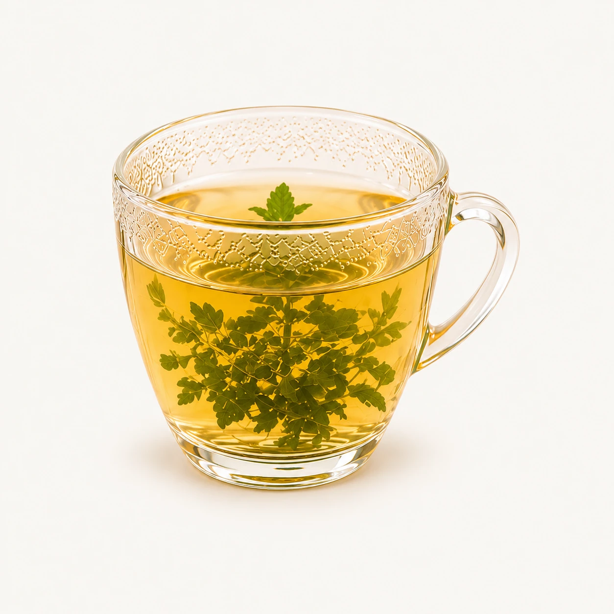
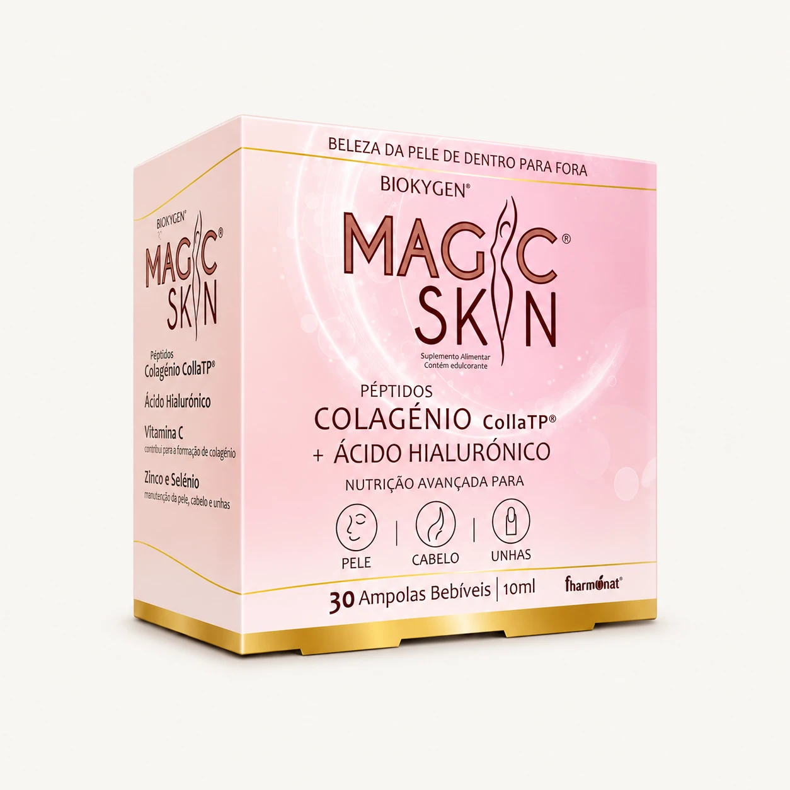
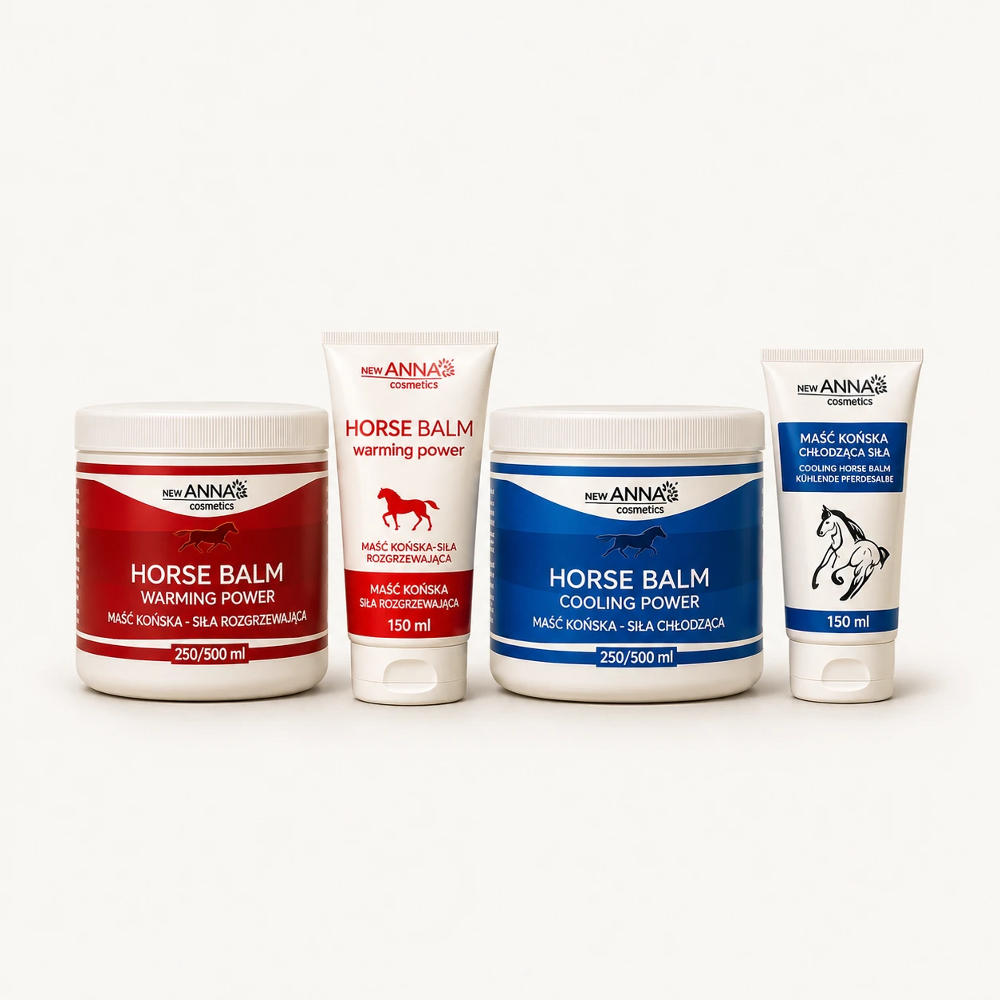

Saltar para o conteúdo
Natureza, cuidado e proximidade.
solnatura
BEM-ESTAR NATURAL
Loja
Categorias
Sobre nós
Ajuda
Contactos
Carrinho
0
Demonstração para apresentação · Pedidos e pagamentos desativados
Início
› Categorias
ESPAÇO SOLNATURA
Categorias

Chás e infusões
Explorar o catálogo →

Suplementos
Explorar o catálogo →

Cuidados do corpo
Explorar o catálogo →